In Azur Lane, the combat feature allows for PvP, which means Player vs Player, and PvE, which means Player vs Enemy. For combat, having a full fleet of 6, 3 vanguards and 3 main ships, is obviously better as it provides for a more stronger advancement and naval strength. However, having a full fleet of 6 takes up a lot of oil, especially if the ships are of higher rarity. For seasonal players, limit their fleet to about 3 ships, 2 vanguard and 1 main ship, to min max their oil efficiently.
To start with Player vs Enemy combat, start by configuring our Formation, to be used against the enemies. Click the blue 'Formations' button to start configuring.
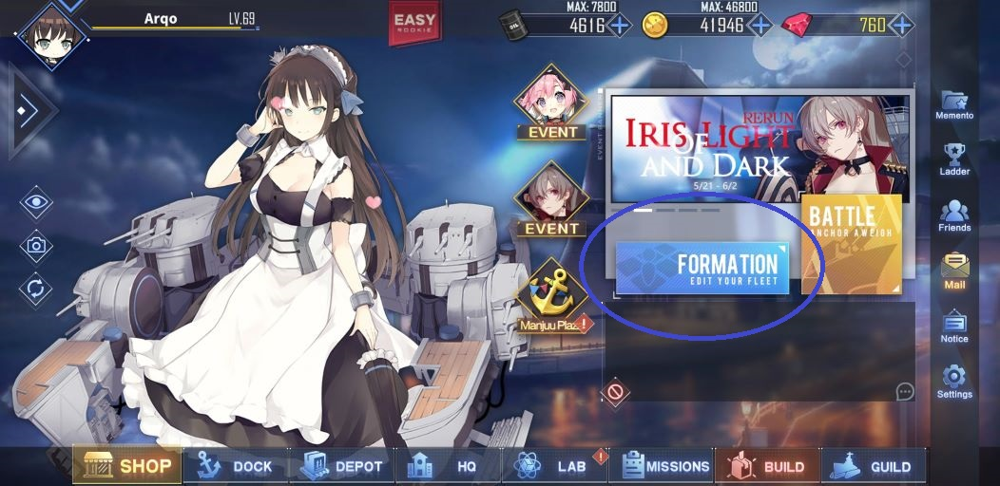On the Formations tab, we will see the stats of our fleet. The numbers under the Vanguard and Main is an estimation of our average vanguard and main power. On the top bar, you will the the specific stat numbers of your fleet. FP means Firepower, TP means Torpedoes, AA means Anti-Air, AV means Aviation, ACV means Aviation Control. The Cost bar indicates how much our ships costs in oil. The cattery beside the fleet boosts the strength of our fleet.
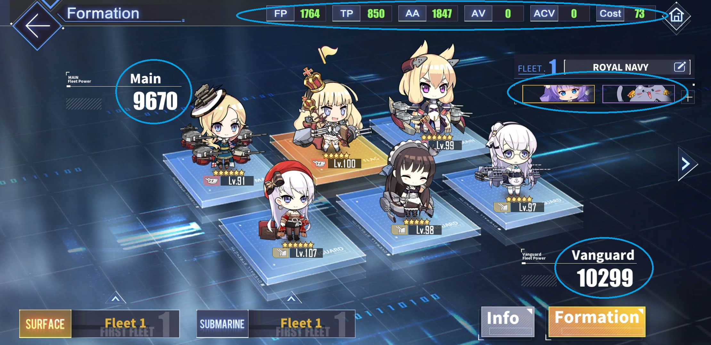Before heading to battle, we are prompted to check beforehand prior to combat. In some maps, some sorties only allow 1 fleet, while later, and much harder sorties will allow 3 to 4 fleets. We can also choose our submarines here. There is a reccommended ACV stat which is needed to be fulfilled before going on to sortie, which may make or break our fleet.
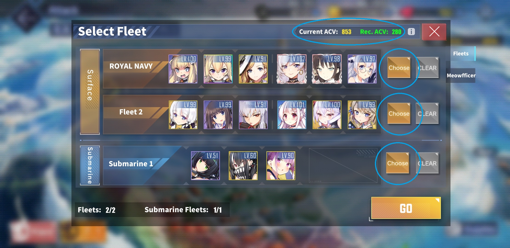The Time Limit for each sortie is 12 hours. On the combat map, we can see that our fleet covers a few white tiles, while our submarines cover a few red tiles. These indicate how far our fleet can reach before having to move the fleet. We can also Retreat, which removes the fleet from sortie, Switch, which switches between fleets, and Attack, which attack the enemy our fleet's tile land on. The HP bar indicates the health of each ship, which can be recovered using recovery skills, or by sortieing with Repair Ships. The Stars indicate the achievements for the sortie- Defeat the Flagship, Defeat Escort Fleet, Defeat All Enemies. The Strategy bar below the Stars indicates the position of our fleet. It can also be used to move our submarines.
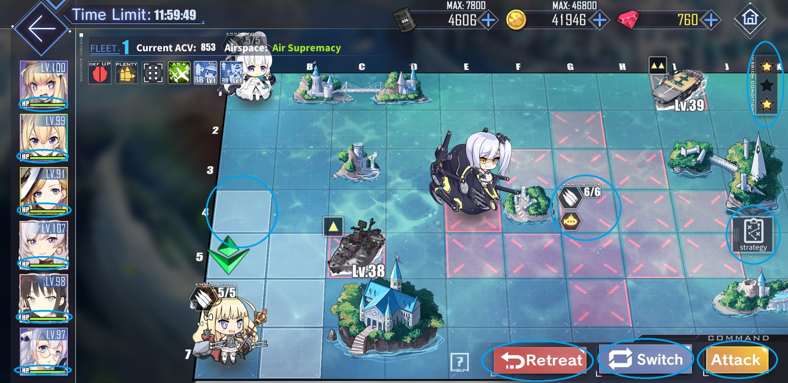Before combat, we can review our fleet. We can reposition our ships from one to another. There is an Auto Combat mode, activating it allows an AI to control your fleet movement in combat, though it is not advisable to do so on hard sorties as the AI is not too advanced. We can also see the Loot drops we can get for successfully winning- an equipment blueprint; used to make equipments, a T part; used to improve the equipments, and a ship drop; allowing ships to randomly drop. This is an important detail, as some good ships, like Akagi or Choukai, are only attainable through map drops. We should check the oil cost of our fleet before combat.
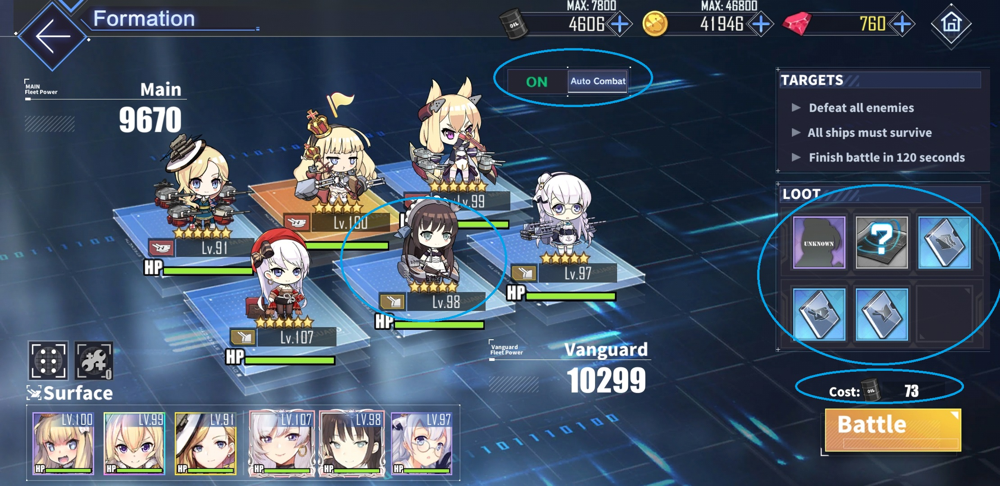During combat, we can toggle between Auto and Manual, so that we can take control if the AI screws up in any way. We can also pause the battle and it will stop any progress before we hit continue. Battle Time Limit is 3 minutes. The blue joystick on the bottom-left is for maneuvering our fleet, to avoid any barrages or torpedoes. For the icons on the bottom-right, the airplane icon allows Aircraft Carriers to deploy their airplanes, the Torpedoes icon allows our Vanguard to deploy their Torpedoes, the Gun icon allows our Main ships to deploy their barrages. The Vanguards' primary guns will automatically activate.
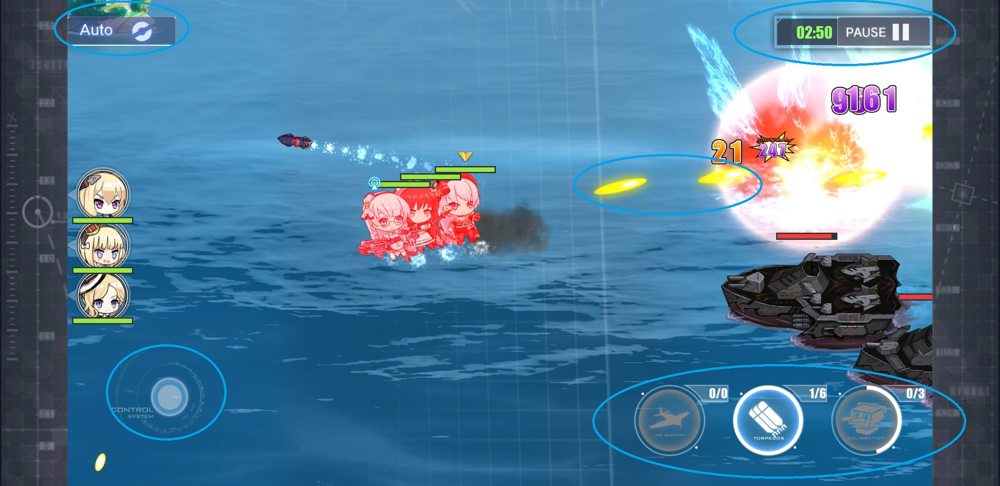After winning the battle, we can see the experience gain on our ships, cattery, and us as a Shikikan. The S rank indicates the achievements for the battle- Claim Victory, No Casualties and Destroy all enemies within 120 seconds 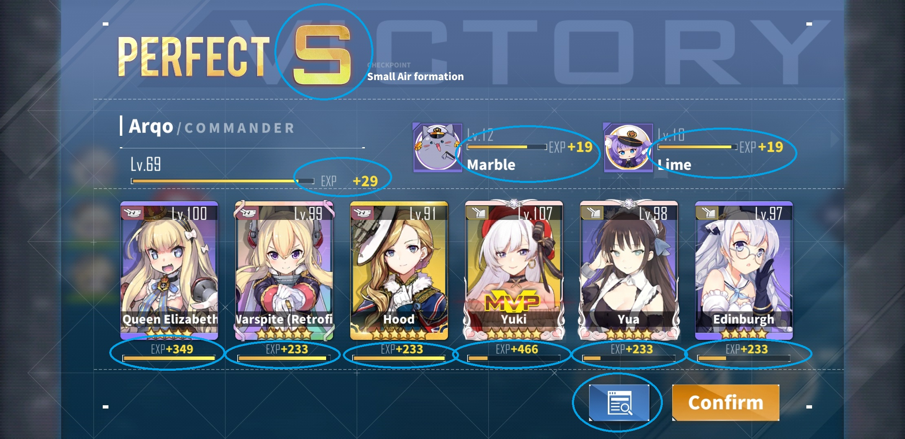 If we toggle the victory screen in the blue button next to the Confirm button, we can see the stats specifically for each ship- how many enemy ships the sunk and how much damage they dealt. 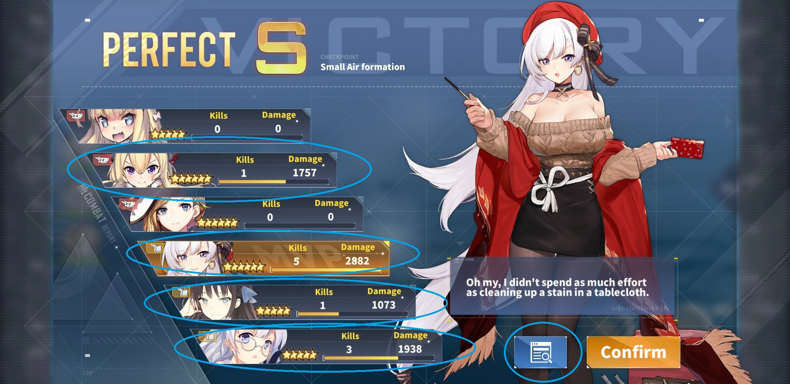
For Player vs Player, while it is called PvP, it is different from normal PvP, in which the opposing Player does not have to be online, and we ourselves are not allowed to control our fleet. To access the PvP menu, click the Battle button.
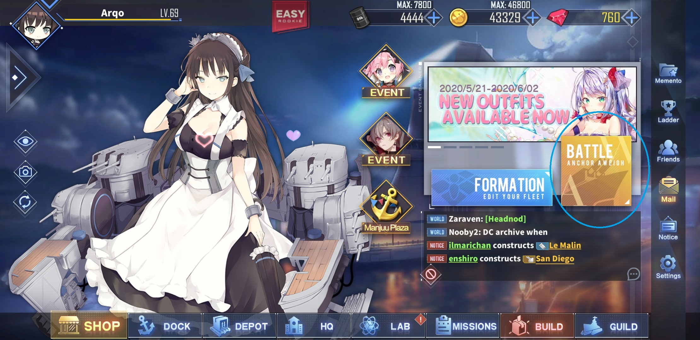On the battle menu, click on Exercise to access the PvP menu.
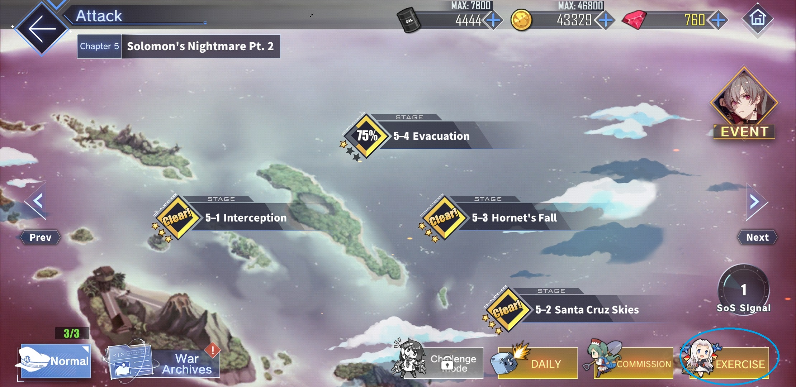On the PvP menu, we can see our fleet and the opponents's fleet stat. Click on the Defense fleet to configure our fleet for when other people PvP using our fleet. Click on the NEW Opponent to refresh the opponents list. There is a limit of 10 Exercises per day. Click on any of the 4 opponents to begin PvP.
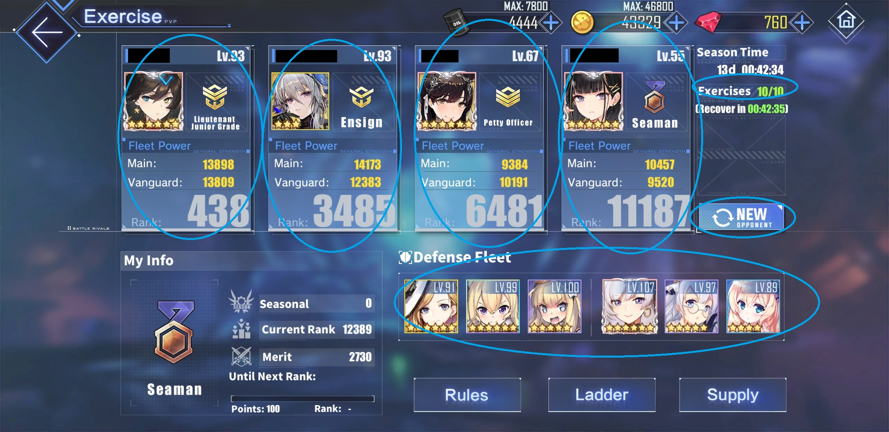Before going to PvP combat, we can preview our opponents' strength and power before continuing. This is so that we can ensure our fleet is not pummelled to death very fast.
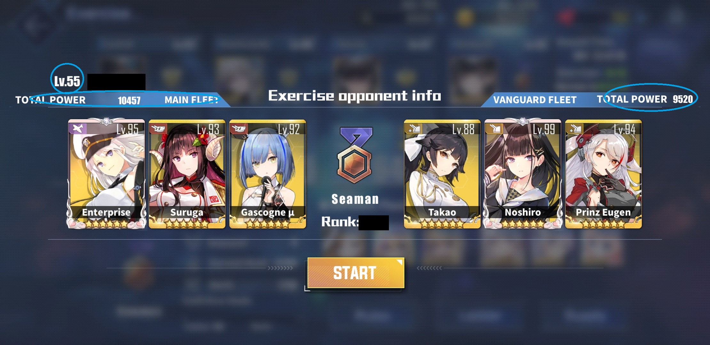Here, we can change our ships' postions, similar to PvE. We can change between fleet. In PvP, there is no drops, but ships still can gain experience points. Click Battle to begin.
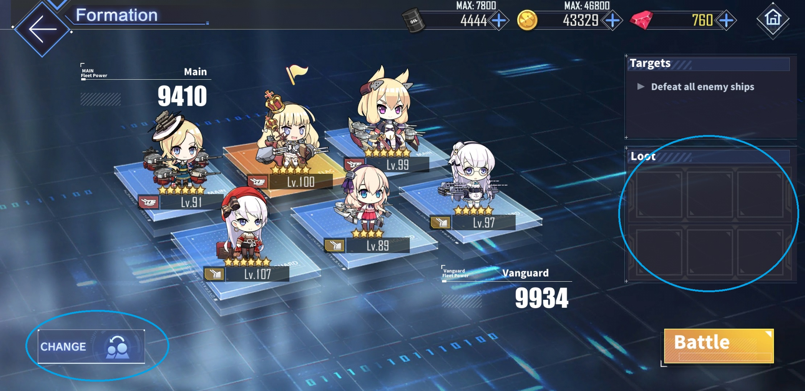Unlike PvE, we are not allowed to control our fleet, hence the Auto/Manual button, the blue joystick and the icons are all disabled. However, Battle Time Limit increased to 5 minutes, and the Pause button is still present. We can also view our fleet and our opponent's fleet health. When the red bar depletes, it signifies all the ships of the fleet has sunk.
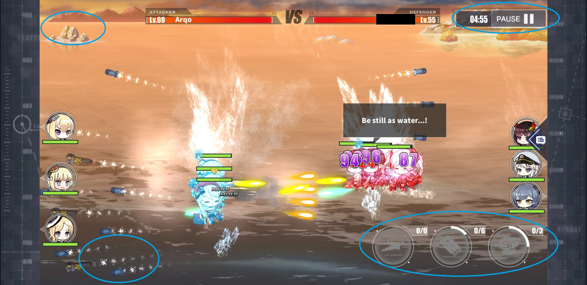When we win, we can see that our ships can gain experience, as well as us Shikikan in rank. These rank determine the average that our opponents will be. An S rank will be given when we successfully defeated all of the enemy ships under 2 minutes.
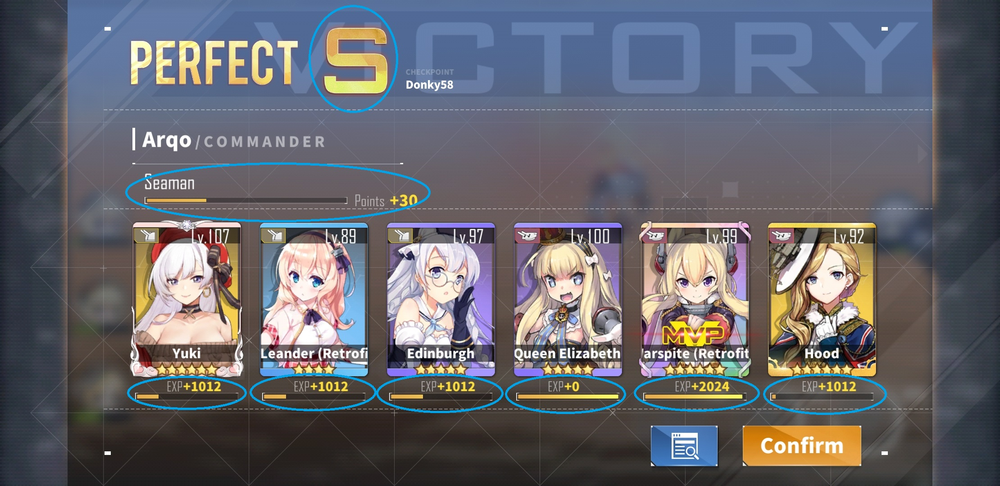When we toggle the blue button next to the Confirm button, a stat screen similar to the one in PvE will be displayed, showing how many ships and how much damage dealt our fleet has done.
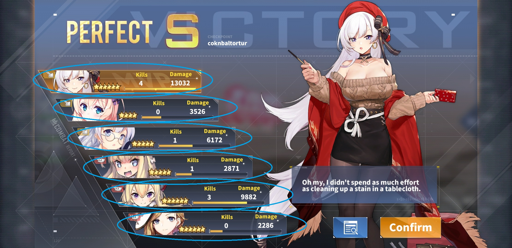